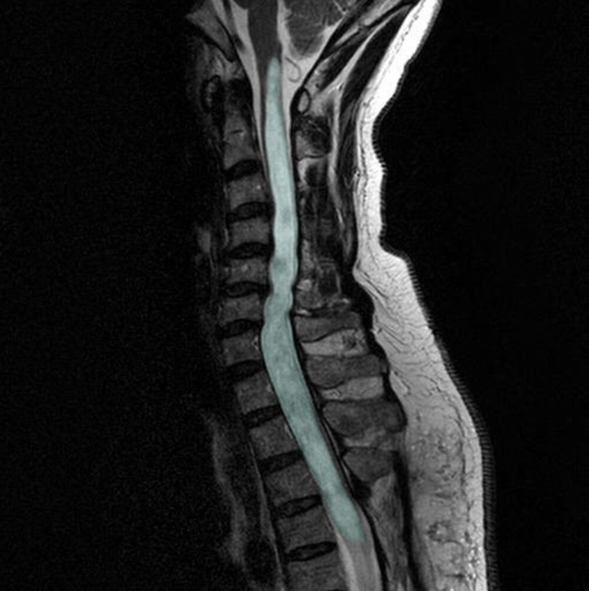

Figure 1. in: Shunting of recurrent post-traumatic syringomyelia into the fourth ventricle: a case report” by Chih-Lung Lin, Journal of Medical Case Reports, licensed under CC BY 2.0.
1) Description of Measurement
Syringomyelia is a disorder characterized by the formation of an abnormal, fluid-filled cavity (syrinx) within the central canal or parenchyma of the spinal cord. The syrinx develops due to disrupted cerebrospinal fluid (CSF) flow, most commonly at the craniocervical junction. Progressive expansion leads to compression and destruction of spinal cord pathways, classically beginning with decussating spinothalamic fibers. When the cavity extends into the brainstem, the condition is termed syringobulbia.
2) Instructions to Measure
3) Normal vs. Pathologic Ranges
4) Important References
National Institute of Neurological Disorders and Stroke. Syringomyelia. Bethesda (MD): National Institute of Neurological Disorders and Stroke (US); [cited 2025 Dec 24]. Available from: https://www.ninds.nih.gov/health-information/disorders/syringomyelia
Fadila M, Sarrabia G, Shapira S, Yaacobi E, Baruch Y, Engel I, Ohana N. Orthopedic Manifestations of Syringomyelia: A Comprehensive Review. J Clin Med. 2025 May 1;14(9):3145. doi: 10.3390/jcm14093145. PMID: 40364175; PMCID: PMC12072671.
Klekamp J. How Should Syringomyelia be Defined and Diagnosed? World Neurosurg. 2018 Mar;111:e729-e745. doi: 10.1016/j.wneu.2017.12.156. Epub 2018 Jan 6. PMID: 29317358.
Shenoy VS, Munakomi S, Sampath R. Syringomyelia. [Updated 2024 Mar 14]. In: StatPearls [Internet]. Treasure Island (FL): StatPearls Publishing; 2025 Jan-. Available from: https://www.ncbi.nlm.nih.gov/books/NBK537110/
Greitz D. Unraveling the riddle of syringomyelia. Neurosurg Rev. 2006 Oct;29(4):251-63; discussion 264. doi: 10.1007/s10143-006-0029-5. Epub 2006 May 31. PMID: 16752160.